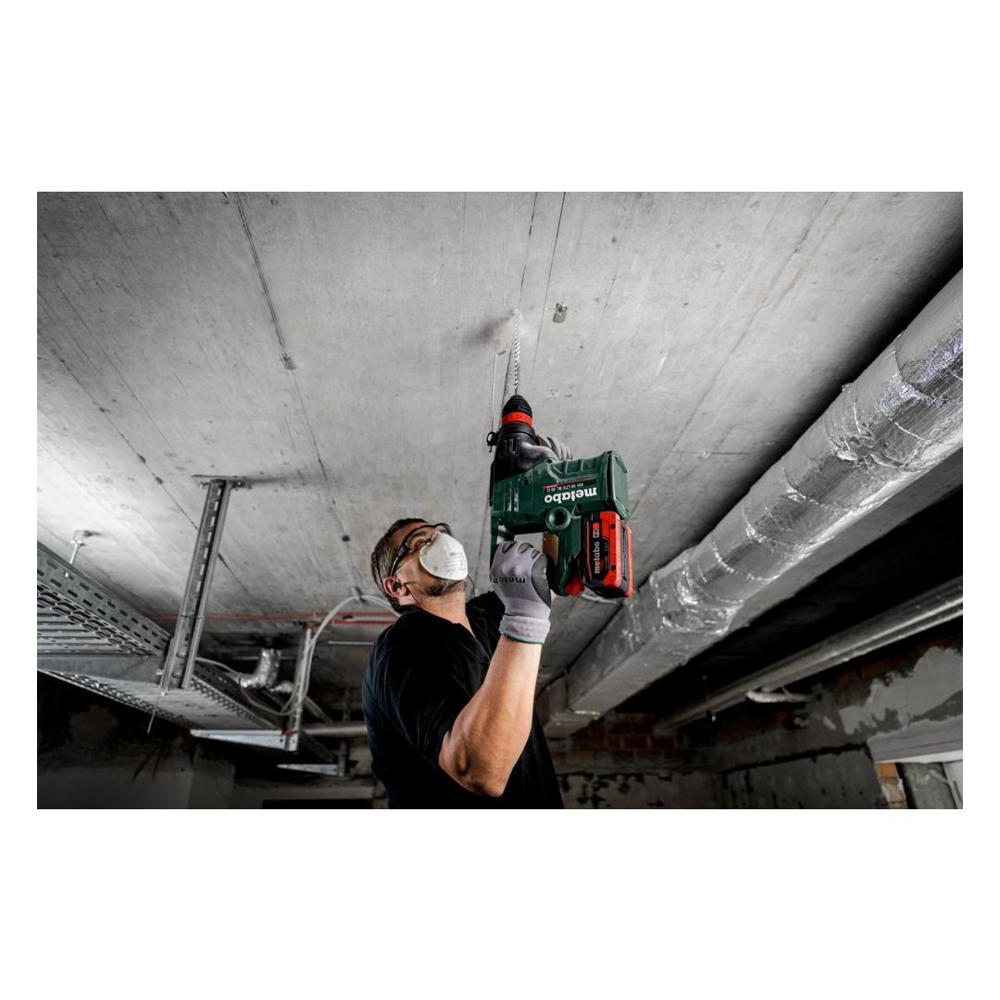
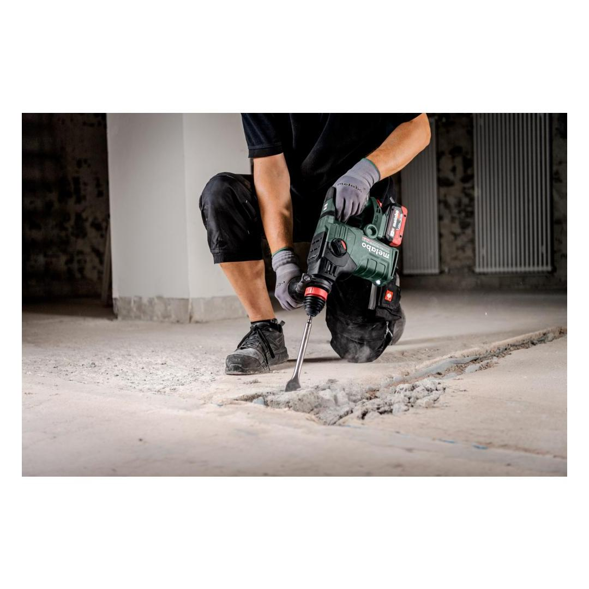
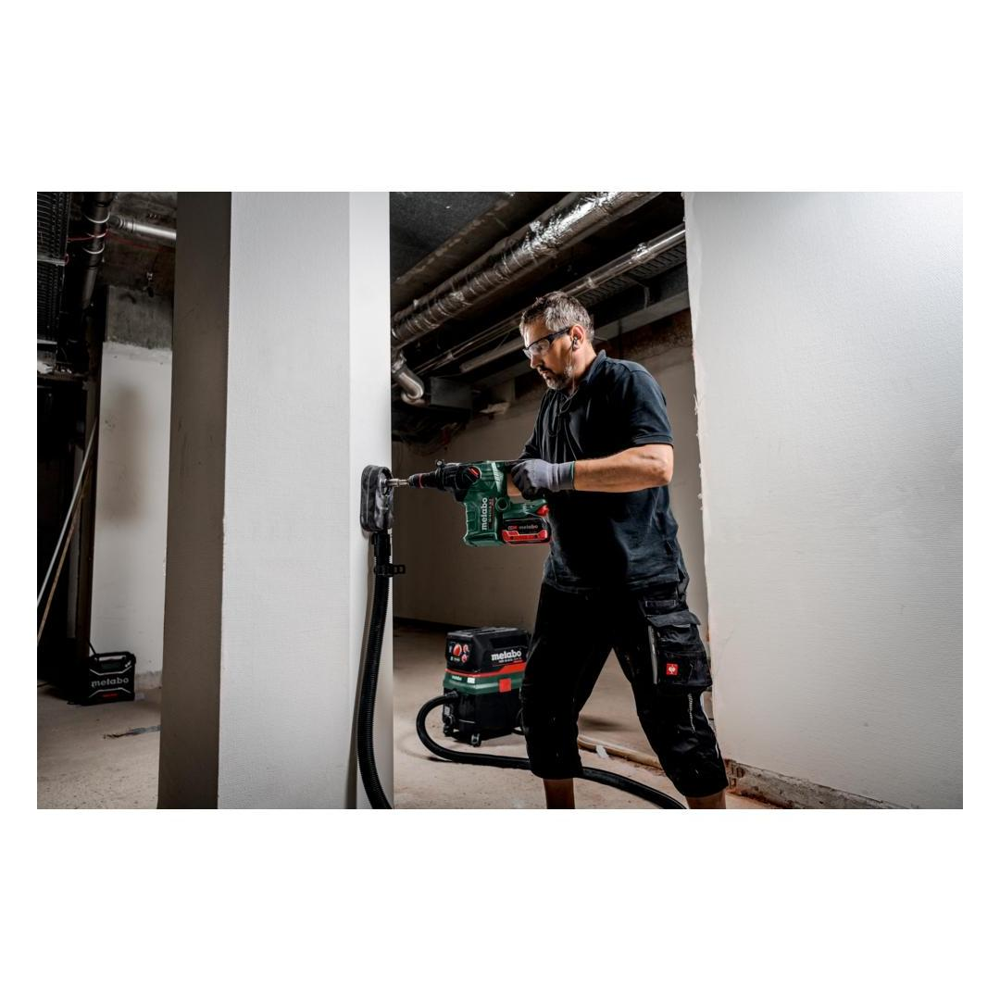
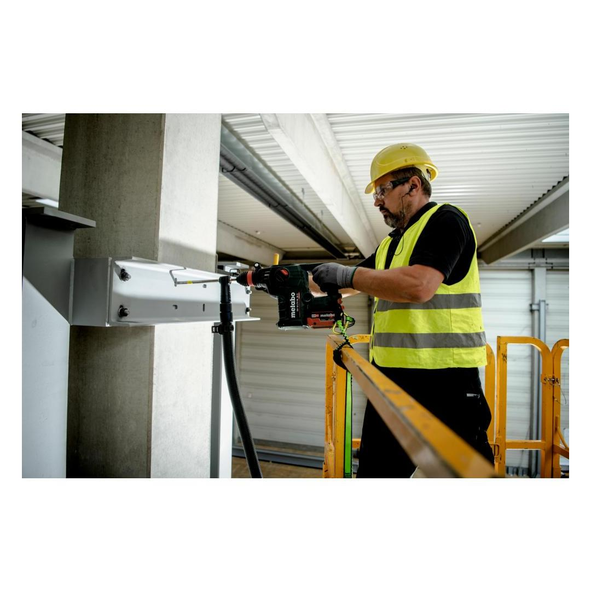
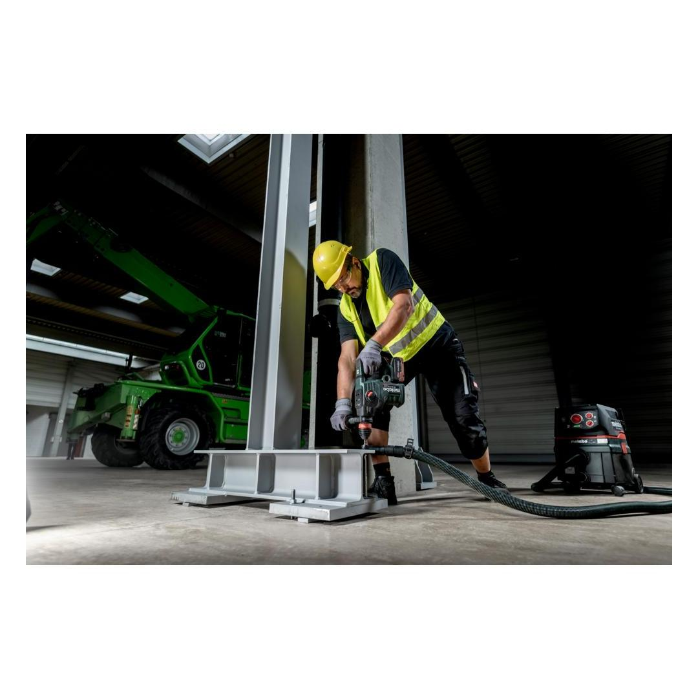

600813840








| Battery voltage | 18 V |
| Max. single blow energy (EPTA) | 4.2 J |
| Maximum impact rate | 4350 bpm |
| Drill-Ø concrete with hammer drills | 32 mm / 1 1/4 " |
| Tool holder | SDS-plus |
hammer drilling, drilling and chiselling
Metabo VibraTech (MVT)vibration damping for convenient continuous mode
Metabo quick changeof bit retainer and accessory, ideal for alternating applications and providing maximum flexibility.
Vario-Constamatic (VC)-Full wave electronicsfor working at customised speeds to suit the application materials, and speeds that remain almost constant even under load
Brushless MotorUnique Metabo brushless motor for quick work progress and highest efficiency for any application
Electronic soft startfor smooth start-up
CAS, the multi-brand battery system100% compatibility of machine, battery packs and chargers of one volt class – from Metabo and other brands. Discover now at www.cordless-alliance-system.com
| Battery voltage | 18 V |
| Max. single blow energy (EPTA) | 4.2 J |
| Maximum impact rate | 4350 bpm |
| Drill-Ø concrete with hammer drills | 32 mm / 1 1/4 " |
| No-load speed | 0 - 810 rpm |
| Tool holder | SDS-plus |
| Weight without battery pack | 4.4 kg / 9.7 lbs |
| Weight with battery pack | 5.4 kg / 11.9 lbs |
| Hammer drilling concrete | 13.9 m/s² |
| Uncertainty of measurement K | 1.5 m/s² |
| Chiseling | 11 m/s² |
| Uncertainty of measurement K | 1.5 m/s² |
| Sound pressure level | 93 dB(A) |
| Sound power level (LwA) | 101 dB(A) |
| Uncertainty of measurement K | 5 dB(A) |
| Hammer chuck for tools with SDS-plus shank end |
| Keyless chuck for tools with cylindrical shank |
| Side handle |
| Drilling depth guide |
| metaBOX 185 XL |
| without battery pack, without charger |